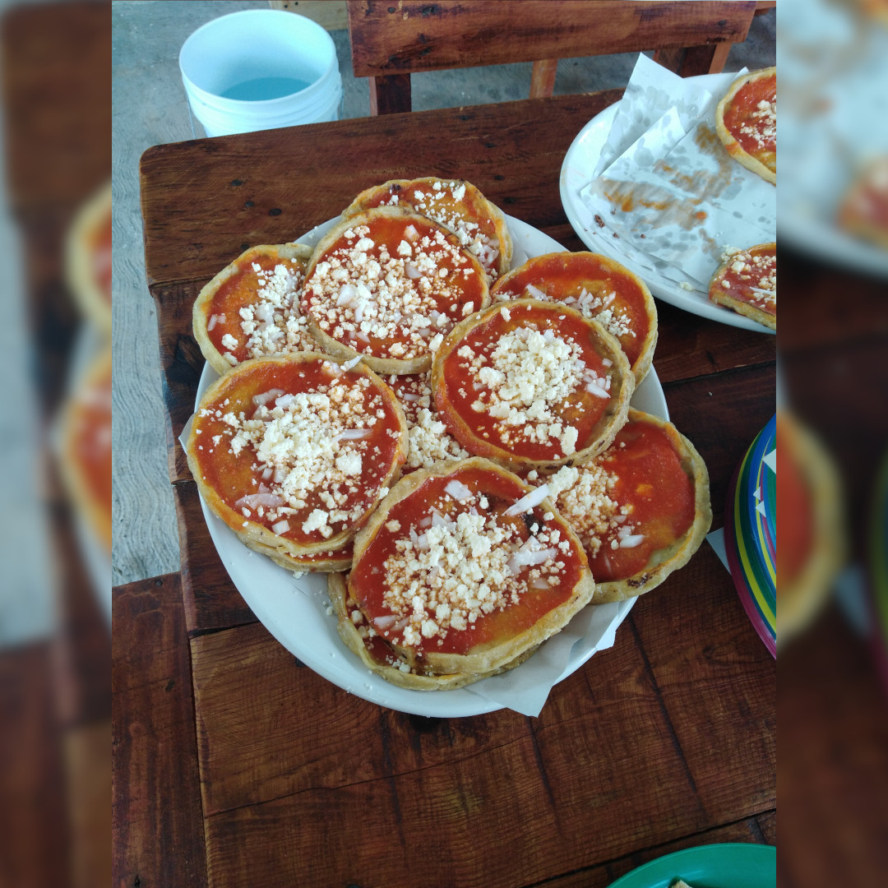

Picadas recipe

About Picadas
Picadas is a traditional dish made in Veracruz, Mexico. It consists on a tortilla with pinched borders and tomato sauce (or any sauce of your preference) above it. The toppings you can put vary, but the most common topping is queso fresco.
Ingredients:
For the masa (corn dough):
- 1 kg. of nixtamalized maize (corn) dough
- 1 teaspoon of salt
- 1 tablespoon of baking powder
- Lukewarm water
- Oil or pork fat
For the tomato sauce:
- 3 tomatoes
- 1 cup of water
- 2 garlic cloves
- 1 teaspoon of chicken broth powder or half a buillon (note: using real chicken broth is better, so if you have it then I'd recommend this option the most)
Toppings:
- Crumbled queso fresco
- Onion in julienne strips (optional)
- Honestly, whatever you want
Instructions:
- First, you'd want to make the sauce so when your tortillas are done, you have everything ready to eat straight away. Cut yout tomatoes in quarters and blend them with the rest of the sauce ingredients.
- Put your sauce in a sauce pan until it boils. Then reserve.
- In a big bowl, mix the dough, the salt and the baking powder together and add the water little by little. The dough must have a soft but firm consistency, and it mustn't be sticky.
- Once you have your masa ready, divide it into small balls of around 30 grams, then make a tortilla with each of them, either by hand or with the help of a rolling pin.
- In a hotplate, spread the oil (or pork fat to add more flavor), then put the tortillas and cook them until both sides are no longer raw.
- When the tortillas are done and still hot, use a kitchen towel to pinch the borders of each one (the towel is to prevent yourself from burning your fingers).
- Once you finish pinching all of the tortillas, put them back into the hotplate to finish cooking them.
- Add your sauce, the queso fresco and the onions above your tortillas and serve them. Bon apetit!
Additional notes:
- Outside of Mexico, you'll probably have problems finding the nixtamalized dough. If you can find this type of flower in the international section of your supermarket or specialized stores, you can do the dough with this instead.
- If you'd like your sauce to have a spicy flavor, you can add chile de arbol or habanero when blending.
- The toppings can be anything you want. The most common toppings I've seen are steak, chicken, potatoes with chorizo, avocado... the list goes on.
- Be careful when serving. The dish is extra hot when out of the hotplate.
- The sauce is not limited to red tomatoes. There are sauces made with green tomatoes, and even with mole! Seriously, it's all about your preferences.
- Don't forget to always wash your veggies or fruits before cooking them!
Go back to see more recipes.